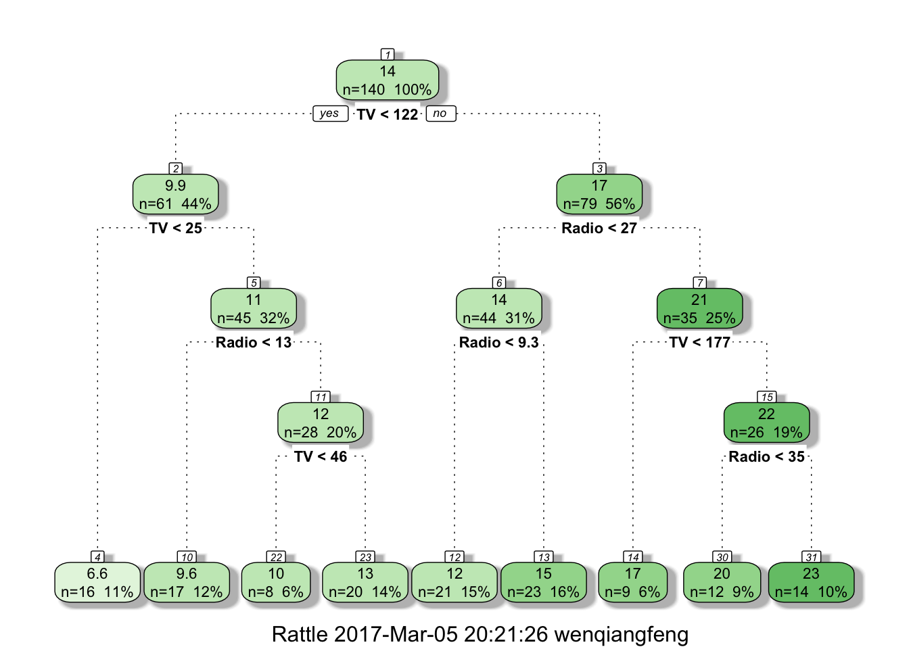

You can download the complete ipython notebook for the this session.
More details can be found on the offical website for pyspark.ml package
Wikipedia: A decision tree is a decision support tool that uses a tree-like graph or model of decisions and their possible consequences, including chance event outcomes, resource costs, and utility. It is one way to display an algorithm.
Decision trees are commonly used in operations research, specifically in decision analysis, to help identify a strategy most likely to reach a goal, but are also a popular tool in machine learning.
Decision tree learning is a method commonly used in data mining.[1] The goal is to create a model that predicts the value of a target variable based on several input variables.It can be used to do the regression and classfication.
from pyspark.sql import SparkSession
spark = SparkSession \
.builder \
.appName("Python Spark Random Forest Regression") \
.config("spark.some.config.option", "some-value") \
.getOrCreate()df = spark.read.format('com.databricks.spark.csv').\
options(header='true', \
inferschema='true').\
load("./data/Advertising.csv",header=True);df.printSchema()# output
root
|-- _c0: integer (nullable = true)
|-- TV: double (nullable = true)
|-- Radio: double (nullable = true)
|-- Newspaper: double (nullable = true)
|-- Sales: double (nullable = true)df.show(6)+---+-----+-----+---------+-----+
|_c0| TV|Radio|Newspaper|Sales|
+---+-----+-----+---------+-----+
| 1|230.1| 37.8| 69.2| 22.1|
| 2| 44.5| 39.3| 45.1| 10.4|
| 3| 17.2| 45.9| 69.3| 9.3|
| 4|151.5| 41.3| 58.5| 18.5|
| 5|180.8| 10.8| 58.4| 12.9|
| 6| 8.7| 48.9| 75.0| 7.2|
+---+-----+-----+---------+-----+
only showing top 6 rowsfrom pyspark.sql import Row
from pyspark.ml.linalg import Vectors# convert the data to dense vector
#def transData(row):
# return Row(label=row["Sales"],
# features=Vectors.dense([row["TV"],
# row["Radio"],
# row["Newspaper"]]))
def transData(data):
return data.rdd.map(lambda r: [Vectors.dense(r[:-1]),r[-1]]).toDF(['features','label'])Remark: I presented two methods at here, each of them has advantage and drawback.
data = transData(df)
data.show(6)# output
+--------------------+-----+
| features|label|
+--------------------+-----+
|[1.0,230.1,37.8,6...| 22.1|
|[2.0,44.5,39.3,45.1]| 10.4|
|[3.0,17.2,45.9,69.3]| 9.3|
|[4.0,151.5,41.3,5...| 18.5|
|[5.0,180.8,10.8,5...| 12.9|
| [6.0,8.7,48.9,75.0]| 7.2|
+--------------------+-----+
only showing top 6 rowsfrom pyspark.ml import Pipeline
from pyspark.ml.regression import DecisionTreeRegressor
from pyspark.ml.feature import VectorIndexer
from pyspark.ml.evaluation import RegressionEvaluatorfeatures: this is a main step for treating categorical variables.featureIndexer = VectorIndexer(inputCol="features", \
outputCol="indexedFeatures", maxCategories=4).fit(data)# Split the data into training and test sets (40% held out for testing)
(trainingData, testData) = data.randomSplit([0.6, 0.4])# Train a DecisionTree model.
dt = DecisionTreeRegressor(featuresCol="indexedFeatures")# Chain indexer and tree in a Pipeline
pipeline = Pipeline(stages=[featureIndexer, dt])# Train model. This also runs the indexer.
model = pipeline.fit(trainingData)Remark: I prefer to use pipline method.
# Make predictions.
predictions = model.transform(testData)# Select example rows to display.
predictions.select("prediction", "label", "features").show(5)# output
+------------------+-----+--------------------+
| prediction|label| features|
+------------------+-----+--------------------+
| 8.600000000000001| 9.3|[3.0,17.2,45.9,69.3]|
|1.6000000000000014| 7.2| [6.0,8.7,48.9,75.0]|
| 7.25| 5.6|[23.0,13.2,15.9,4...|
|15.300000000000002| 15.5|[24.0,228.3,16.9,...|
| 17.875| 15.0|[27.0,142.9,29.3,...|
+------------------+-----+--------------------+
only showing top 5 rows# Select (prediction, true label) and compute test error
evaluator = RegressionEvaluator(
labelCol="label", predictionCol="prediction", metricName="rmse")
rmse = evaluator.evaluate(predictions)
print("Root Mean Squared Error (RMSE) on test data = %g" % rmse)# output
Root Mean Squared Error (RMSE) on test data = 1.63981library(rpart)
library(caret)
library(ggplot2)
#install.packages('rattle')
#install.packages('rpart.plot')
#install.packages('RColorBrewer')
library(rattle)
library(rpart.plot)
library(RColorBrewer)df <- read.csv("./data/Advertising.csv", header = TRUE)randomSplit <- function(data,ratio)
{
mx = dim(data)[1]
index = createDataPartition(1:mx,p=0.7,list=FALSE)
train = data[index,]
test = data[-index,]
list(train=train,test=test)
}splited = randomSplit(df,0.7)
train = splited$train
test = splited$testfit <- rpart(Sales ~ TV + Radio + Newspaper,
data=train,
method="anova")#plot(fit)
#text(fit)fancyRpartPlot(fit,sub="")
Prediction <- predict(fit, test, method="anova")RMSE <- sqrt(mean((test$Sales-Prediction )^2))
RMSE## [1] 2.050344